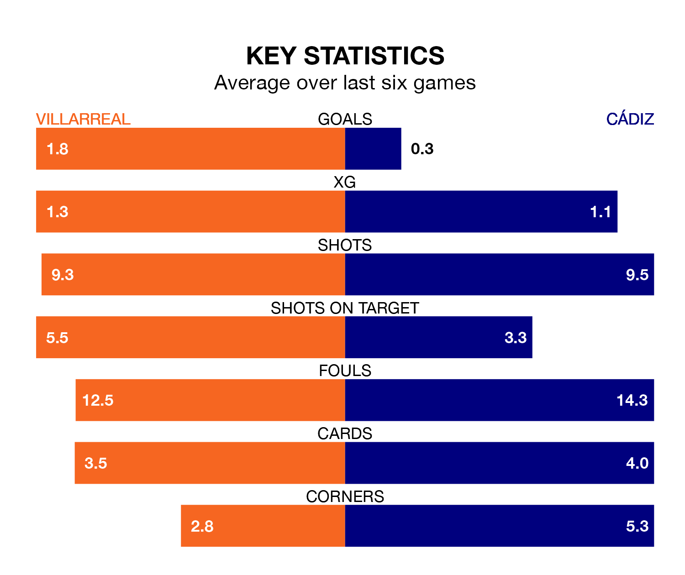

Cádiz travel to Estadio de la Cerámica looking to secure a first win in 19 La Liga games against Villarreal on Sunday lunchtime.
Cádiz have lost nine and drawn nine matches since they last earned three points – against Villarreal on September 1.
They face a Villarreal side who have won five and drawn five over that time.
Cádiz are 18th in the table after 22 games, of which they have won two and drawn 10, earning 16 points.
Villarreal are four places ahead of the visitors in 14th, with six wins and five draws putting them on 23 points.
With 15 goals in 22 games so far this season, Cádiz are the league's lowest scorers with 0.7 goals per game. And they are conceding more than average, letting in 31 goals at a rate of 1.4 per game.
The home side, meanwhile, are above average scorers, with 1.5 goals per game, compared to a league average of 1.3. They have conceded 2.0 goals per game.
In the last 10 years, Villarreal and Cádiz have played each other on nine occasions. Villarreal won four of them, Cádiz two, and they drew three times.
On average, Villarreal scored 1.4 goals and Cádiz 1.0 in those matches.
Their last meeting was on September 1, when Cádiz won 3-1 at home.
In Gerard Moreno, Villarreal have one of the league's sharpest shooters so far this season. He has notched 10 goals in 19 appearances, to sit sixth in the scoring charts.
His goal rate of one every 148 minutes is much quicker than that of Chris Ramos, Cádiz's top scorer with a goal every 337 minutes, and a total of five goals in 22 games.
Villarreal's last match was on January 27, a 5-3 win against FC Barcelona, with Alexander Sørloth, Gonçalo Guedes, Ilias Akhomach, José Luis Morales and Moreno Balagueró getting the goals for Villarreal.
Cádiz drew 0-0 with Athletic Club Bilbao last time out, on Sunday.
Sunday's match will be refereed by Pablo González Fuertes, who has taken charge of 12 La Liga games so far this season, issuing three red cards and booking 43 players. He has awarded six penalties.
The last Cádiz game González Fuertes refereed was the 2-0 loss away at Valencia CF on October 23. He is yet to oversee a match featuring Villarreal this season.
Updated: 14:12 (UTC), 02/02/24